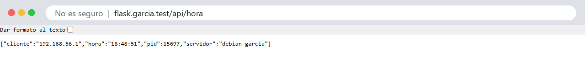

Práctica 3.3 - Aplicación Flask con Gunicorn por un socket Unix¶
Cuándo se hace
Al terminar el bloque 4 de la teoría del Tema 3, con la práctica 3.2 terminada. En la máquina principal.
Objetivos
Al terminar esta práctica deberás ser capaz de:
- Crear un entorno virtual de Python e instalar en él dependencias con versiones fijas.
- Distinguir el servidor de desarrollo de Flask de un servidor WSGI de producción.
- Ejecutar Gunicorn como servicio de
systemd, escuchando en un socket Unix. - Publicar la aplicación detrás de Nginx a través del socket.
- Comprobar cómo reparte Gunicorn el trabajo entre sus procesos.
1. Qué vas a montar¶
Tu ordenador debian-tuapellido (192.168.56.10)
192.168.56.1 ───► Nginx :80 ── flask.tuapellido.test ──► /run/flask/flask.sock ──► Gunicorn
├── trabajador
└── trabajador
Esta vez la aplicación no abre ningún puerto: Nginx y Gunicorn se hablan por un fichero especial, el socket.
2. El entorno virtual¶
Debian trae Python 3.13, pero no el módulo para crear entornos virtuales: sin el paquete python3-venv, python3 -m venv falla diciendo que ensurepip is not available. Instálalo y prepara la carpeta:
sudo apt install python3-venv
sudo mkdir /var/www/flask.garcia.test
sudo chown $USER:$USER /var/www/flask.garcia.test
cd /var/www/flask.garcia.test
python3 -m venv .venv
source .venv/bin/activate
El prompt empieza ahora por (.venv). Comprueba qué python y qué pip estás usando:
Ya no son los del sistema: todo lo que instales irá dentro de .venv. Crea el fichero de dependencias, con versiones fijas:
Successfully installed Flask-3.1.3 Jinja2-3.1.6 MarkupSafe-3.0.4 Werkzeug-3.1.9 blinker-1.9.0 click-8.5.0 gunicorn-26.2.0 itsdangerous-2.2.0
blinker==1.9.0
click==8.5.0
Flask==3.1.3
gunicorn==26.2.0
itsdangerous==2.2.0
Jinja2==3.1.6
MarkupSafe==3.0.4
Werkzeug==3.1.9
Has pedido dos paquetes y hay ocho: Flask depende de otros seis. pip freeze muestra todo lo instalado en el entorno, con su versión exacta.
Si sale pip: command not found
Es que el entorno virtual no está activado (el prompt no empieza por (.venv)): Debian no trae pip para el sistema, solo el que hay dentro de cada entorno virtual. Vuelve a la carpeta y haz source .venv/bin/activate. Si en otra máquina tienes instalado el pip del sistema, el error será externally-managed-environment (apartado 6 de la teoría), y la solución es la misma.
3. La aplicación¶
import os
import socket
import time
from datetime import datetime
from zoneinfo import ZoneInfo
from flask import Flask, jsonify, request
app = Flask(__name__)
@app.route("/")
def inicio():
return (f"<h1>Aplicación Flask</h1>"
f"<p>Servida por <b>{socket.gethostname()}</b>. "
f"Prueba <a href='/api/hora'>/api/hora</a>.</p>")
@app.route("/api/hora")
def hora():
return jsonify(
hora=datetime.now(ZoneInfo("Europe/Madrid")).strftime("%H:%M:%S"),
servidor=socket.gethostname(),
pid=os.getpid(),
cliente=request.headers.get("X-Real-IP", request.remote_addr),
)
@app.route("/api/lenta")
def lenta():
time.sleep(3) # simula una consulta lenta
return jsonify(pid=os.getpid(), espera="3 s")
app = Flask(__name__)es la aplicación WSGI. Gunicorn la buscará comoapp:app: el objetoappdel móduloapp.py./api/horadevuelve el PID del proceso que atiende y la IP del cliente: la toma de la cabeceraX-Real-IPque pone Nginx, o de la conexión si no la hay./api/lentatarda tres segundos en responder, como una consulta pesada a una base de datos. La usarás en el apartado 7.
4. Primero, en desarrollo¶
* Serving Flask app 'app'
* Debug mode: off
WARNING: This is a development server. Do not use it in a production deployment. Use a production WSGI server instead.
* Running on all addresses (0.0.0.0)
* Running on http://127.0.0.1:5000
* Running on http://10.0.2.15:5000
Press CTRL+C to quit
Flask solo nombra una de las IP de la máquina, la 10.0.2.15 de la tarjeta NAT (la que usa para salir a Internet), pero 0.0.0.0 significa todas, también la 192.168.56.10. Entra en http://192.168.56.10:5000/api/hora desde tu navegador. Funciona, pero lee el aviso: es un servidor para programar, sin la robustez ni el rendimiento de uno de producción. Para con Ctrl+C.
5. Gunicorn, a mano¶
Prueba el servidor de producción, todavía en un puerto y desde tu terminal:
[2026-11-15 18:47:19 +0100] [15260] [INFO] Starting gunicorn 26.2.0
[2026-11-15 18:47:19 +0100] [15260] [INFO] Listening at: http://0.0.0.0:8000 (15260)
[2026-11-15 18:47:19 +0100] [15260] [INFO] Using worker: sync
[2026-11-15 18:47:19 +0100] [15261] [INFO] Booting worker with pid: 15261
[2026-11-15 18:47:20 +0100] [15262] [INFO] Booting worker with pid: 15262
[2026-11-15 18:47:20 +0100] [15260] [INFO] Control socket listening at /run/user/1001/gunicorn.ctl
Lee las líneas: el maestro (PID 15260) escucha en el puerto 8000, usa trabajadores sync y arranca dos (15261 y 15262). La última línea es el socket de control de las versiones recientes de Gunicorn, que permite administrarlo mientras funciona. Lo crea en la carpeta temporal de tu sesión, /run/user/<tu número de usuario>, y, si no la hay, en la carpeta personal (~/.gunicorn). Volverás a él en el apartado 6.
Entra en http://192.168.56.10:8000/api/hora y recarga varias veces: el pid es el de uno de los trabajadores. Para con Ctrl+C y sal del entorno virtual:
6. Gunicorn como servicio¶
[Unit]
Description=Aplicación Flask de flask.garcia.test (Gunicorn)
After=network.target
[Service]
User=www-data
Group=www-data
WorkingDirectory=/var/www/flask.garcia.test
RuntimeDirectory=flask
ExecStart=/var/www/flask.garcia.test/.venv/bin/gunicorn --workers 2 --no-control-socket --bind unix:/run/flask/flask.sock app:app
Restart=on-failure
[Install]
WantedBy=multi-user.target
ExecStartllama directamente algunicorndel entorno virtual: no hace falta activarlo.--bind unix:/run/flask/flask.sock: en lugar de un puerto, un socket Unix.RuntimeDirectory=flask: al arrancar,systemdcrea/run/flask, propiedad dewww-data, y la borra al parar./runse vacía en cada arranque, así que no puedes crearla tú a mano una vez y olvidarte.--no-control-socket: un servicio no tiene sesión, así que Gunicorn intentaría crear el socket de control del apartado 5 en la carpeta personal del usuario. La dewww-dataes/var/www, donde no puede escribir. Sin esta opción, el servicio funciona pero registraControl server error: [Errno 13] Permission denied: '/var/www/.gunicorn'.
● flask-app.service - Aplicación Flask de flask.garcia.test (Gunicorn)
Loaded: loaded (/etc/systemd/system/flask-app.service; enabled; preset: enabled)
Active: active (running) since Sun 2026-11-15 18:47:54 CET; 3s ago
Invocation: 5b10b3ba21d44b5ead2d0dc706b85405
Main PID: 15423 (gunicorn)
Tasks: 3 (limit: 2317)
Memory: 46.6M (peak: 47M)
CPU: 703ms
CGroup: /system.slice/flask-app.service
├─15423 /var/www/flask.garcia.test/.venv/bin/python3 /var/www/flask.garcia.test/.venv/bin/gunicorn --worke…
├─15425 /var/www/flask.garcia.test/.venv/bin/python3 /var/www/flask.garcia.test/.venv/bin/gunicorn --worke…
└─15426 /var/www/flask.garcia.test/.venv/bin/python3 /var/www/flask.garcia.test/.venv/bin/gunicorn --worke…
Nov 15 18:47:54 debian-garcia systemd[1]: Started flask-app.service - Aplicación Flask de flask.garcia.test (Gunicorn).
Nov 15 18:47:54 debian-garcia gunicorn[15423]: [2026-11-15 18:47:54 +0100] [15423] [INFO] Starting gunicorn 26.2.0
Nov 15 18:47:54 debian-garcia gunicorn[15423]: [2026-11-15 18:47:54 +0100] [15423] [INFO] Listening at: unix:/ru…(15423)
Nov 15 18:47:54 debian-garcia gunicorn[15423]: [2026-11-15 18:47:54 +0100] [15423] [INFO] Using worker: sync
Nov 15 18:47:54 debian-garcia gunicorn[15425]: [2026-11-15 18:47:54 +0100] [15425] [INFO] Booting worker with pid: 15425
Nov 15 18:47:54 debian-garcia gunicorn[15426]: [2026-11-15 18:47:54 +0100] [15426] [INFO] Booting worker with pid: 15426
Hint: Some lines were ellipsized, use -l to show in full.
Tres procesos: el maestro y dos trabajadores. Las líneas largas salen cortadas (…) para que quepan en la terminal; con sudo systemctl status -l flask-app las ves enteras. Recuerda que el sudo es para ver el registro: sin él, systemctl status no lo muestra. Mira el socket:
La s del principio indica que es un socket. Lo ha creado Gunicorn, como www-data, que es también el usuario de los trabajadores de Nginx.
7. Publicar con Nginx¶
server {
listen 80;
listen [::]:80;
server_name flask.garcia.test;
access_log /var/log/nginx/flask.access.log;
error_log /var/log/nginx/flask.error.log;
location / {
proxy_pass http://unix:/run/flask/flask.sock;
include proxy_params;
}
}
http://unix: le dice a Nginx que hable HTTP, pero por el socket en lugar de por TCP. Actívalo, sudo nginx -t, recarga y añade flask.garcia.test a tu hosts. Desde tu ordenador:
En el navegador:

Cómo se reparten las peticiones¶
Repite la petición varias veces: casi siempre contesta el mismo pid. Gunicorn no reparte por turnos como el balanceador de la práctica 2.5: la petición se la queda el primer trabajador libre que la recoge del socket. Con peticiones rápidas, el primero casi siempre está libre.
Para ver el límite, lanza tres peticiones lentas a la vez. Desde la propia máquina (en bash, & lanza cada curl en segundo plano y wait espera a que acaben todos):
for i in 1 2 3; do
curl -s -o /dev/null -w "petición $i: %{http_code} en %{time_total} s\n" -H "Host: flask.garcia.test" http://127.0.0.1/api/lenta &
done; wait
Dos trabajadores sync, dos peticiones a la vez: la tercera espera a que uno quede libre y tarda el doble. Cuál de las tres es la lenta cambia de una vez a otra. Cambia --workers 2 por --workers 3 en el servicio, haz sudo systemctl daemon-reload y sudo systemctl restart flask-app, y repite:
Deja después el servicio otra vez con --workers 2. Más trabajadores atienden más peticiones a la vez, pero cada uno es un proceso con su propia memoria: no se puede subir sin límite.
8. Cuando algo falla¶
Un trabajador muere¶
Mata uno de los trabajadores (no el maestro):
ps -o user,pid,ppid,cmd -C gunicorn # el maestro tiene PPID 1; sus trabajadores, el PID del maestro
sudo kill -9 15622 # el PID de uno de los trabajadores
sudo journalctl -u flask-app -n 2
Nov 15 18:48:43 debian-garcia gunicorn[15619]: [2026-11-15 18:48:43 +0100] [15619] [ERROR] Worker (pid:15622) was sent SIGKILL! Perhaps out of memory?
Nov 15 18:48:43 debian-garcia gunicorn[15669]: [2026-11-15 18:48:43 +0100] [15669] [INFO] Booting worker with pid: 15669
El maestro lo ha detectado y ha arrancado otro (15669) al momento. (Los PID no coinciden con los del systemctl status de antes porque el servicio se ha reiniciado al cambiar los trabajadores.) El «Perhaps out of memory?» es solo una suposición de Gunicorn: el motivo más habitual de que alguien mate un trabajador con SIGKILL es que el sistema se quede sin memoria. systemd ni se ha enterado: el servicio sigue en marcha. Es la segunda red de seguridad, por debajo de Restart=on-failure.
El servicio está parado¶
Al parar, systemd ha borrado la carpeta y el socket. Recarga http://flask.garcia.test/api/hora: 502 Bad Gateway. En el registro de errores del sitio:
2026/11/15 18:48:45 [crit] 15478#15478: *71 connect() to unix:/run/flask/flask.sock failed (2: No such file or directory) while connecting to upstream, client: 192.168.56.1, server: flask.garcia.test, request: "GET /api/hora HTTP/1.1", upstream: "http://unix:/run/flask/flask.sock:/api/hora", host: "flask.garcia.test"
Compáralo con el de la práctica 3.1: allí era Connection refused (el puerto existe, pero nadie escucha); aquí, No such file or directory (el socket ni siquiera existe). Arranca otra vez el servicio con sudo systemctl start flask-app.
9. Haz la instantánea¶
Apaga la máquina y toma una instantánea: p3.3-flask.
Cuestiones finales¶
Cuestión 1
¿Qué es un entorno virtual y qué problema resuelve? ¿Por qué el servicio no necesita hacer source .venv/bin/activate?
Cuestión 2
En requirements.txt has escrito dos paquetes, pero pip freeze muestra ocho. ¿Por qué? ¿Qué ventaja tiene fijar las versiones con ==?
Cuestión 3
Explica qué hacen RuntimeDirectory=flask y --no-control-socket. ¿Qué pasaría con el socket si crearas la carpeta /run/flask a mano y reiniciaras la máquina?
Cuestión 4
Explica el resultado de las tres peticiones lentas con dos trabajadores. ¿En qué se diferencia un trabajador de Gunicorn de un trabajador de Nginx?
Cuestión 5
Compara los dos 502 de las prácticas 3.1 y 3.3. ¿Qué te dice cada mensaje de error sobre dónde está el problema?
Entrega¶
Igual que en las prácticas anteriores: documento de evidencias (40 %) y demostración en clase (60 %).
Parte 1 — Documento de evidencias (40 %)¶
Un PDF llamado P3.3-Apellido-Nombre.pdf con portada, las evidencias (en texto, con comando y prompt) y las respuestas a las cuestiones.
| # | Qué hay que demostrar | Dónde | Comando cuya salida se pega |
|---|---|---|---|
| 1 | El entorno virtual | Principal | which python pip con el entorno activado |
| 2 | Las dependencias | Principal | cat requirements.txt y pip freeze |
| 3 | La aplicación | Principal | cat app.py |
| 4 | El servidor de desarrollo y su aviso | Principal | La salida de flask --app app run --host 0.0.0.0 |
| 5 | El servicio | Principal | cat /etc/systemd/system/flask-app.service y sudo systemctl status -l flask-app |
| 6 | El socket | Principal | ls -l /run/flask y la línea de flask.sock en sudo ss -xlp |
| 7 | La configuración de Nginx | Principal | cat /etc/nginx/sites-available/flask.tuapellido.test |
| 8 | La aplicación a través del proxy, con la IP real | Tu ordenador | curl.exe http://flask.tuapellido.test/api/hora |
| 9 | Las tres peticiones lentas, con 2 y con 3 trabajadores | Principal | El bucle del apartado 7, las dos veces |
| 10 | El trabajador que muere y se repone | Principal | sudo journalctl -u flask-app -n 2 tras el kill -9 |
| 11 | El 502 y su causa |
Principal | La última línea de flask.error.log con el servicio parado |
Parte 2 — Demostración en clase (60 %)¶
Mini entrevista individual en la mesa del profesor, con la máquina encendida: muestras la aplicación en flask.tuapellido.test, haces la tarea que se te pida (por ejemplo, añadir una dependencia o una ruta y desplegarla) y explicas una decisión o un concepto.
Criterios de evaluación¶
| Parte | Criterio | Peso |
|---|---|---|
| Documento | Las once evidencias están completas, en texto y explicadas | 25 % |
| Documento | Las cinco cuestiones están respondidas con corrección y criterio propio | 15 % |
| Demostración | Gunicorn funciona como servicio con www-data por el socket, y la aplicación se ve en flask.tuapellido.test |
20 % |
| Demostración | Realizas la tarea que se te pide y explicas lo que haces | 20 % |
| Demostración | Explicas una decisión o un concepto con tus palabras | 20 % |
Antes de entregar, comprueba que…¶
- ☐
requirements.txtfija las versiones de Flask y Gunicorn. - ☐ El servicio
flask-appestáenabledyactive (running), conwww-datay dos trabajadores. - ☐ Gunicorn no escucha en ningún puerto TCP:
sudo ss -tlnpno muestra el 8000 ni el 5000. - ☐
http://flask.tuapellido.test/api/horamuestra tu IP real. - ☐ Existe la instantánea
p3.3-flask. - ☐ El archivo se llama
P3.3-Apellido-Nombre.pdf.